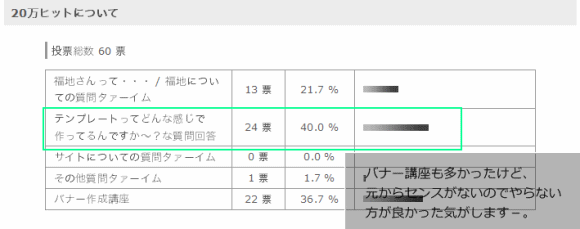
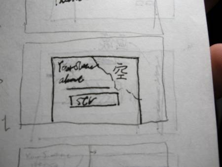
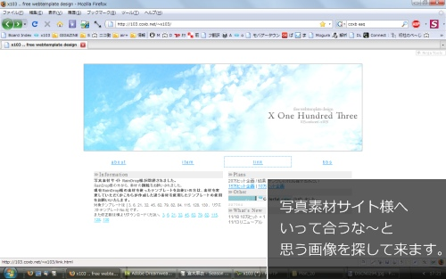
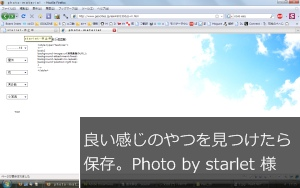
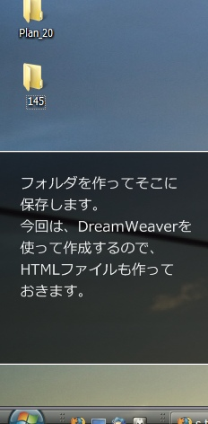
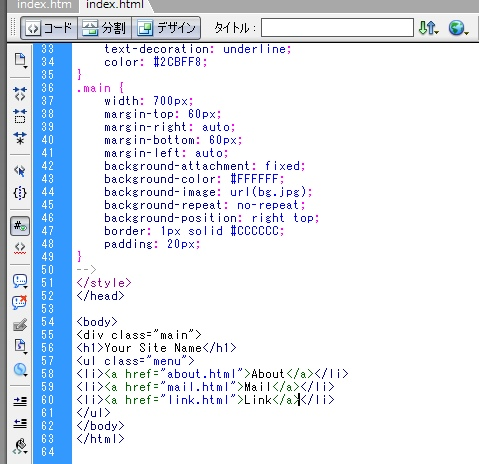
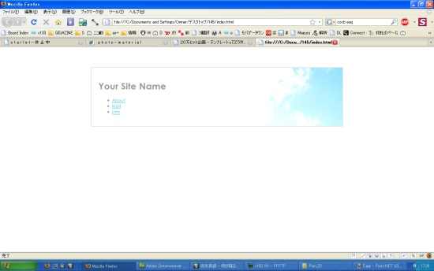
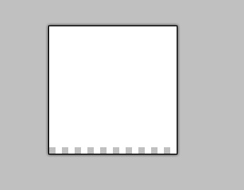
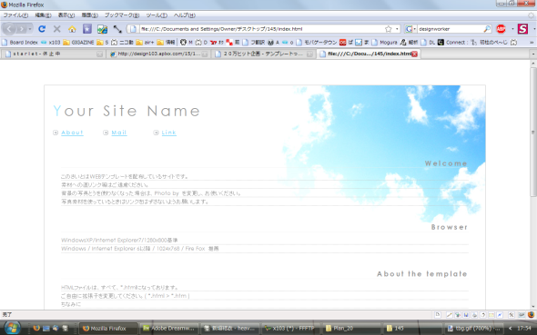

One
２０万ヒットのアンケートを取った結果、下記のようになりました。

というわけでテンプレってどうやってる作ってるんですか？ですが、作成工程を見せていきたいと思いまっす。
Two
メモ帳に適当にメモっておきます。（いつも筆箱の中に入ってます＾＾

適当な時間に（授業中とか）いろいろな時間にデザインが浮かんでるのでそれを適当にめもー。
Three



Four
make!
基本情報(色、フォントなど)をうっていきます。

で今こんな感じ。

おまけ的な画像も作って（作成：.td部分のドットの背景です。)

でまぁ時々変更をしていき最終的にはこんな感じになりました

で完成ー。
いつも通りに適当です。
申し訳ありません（汗